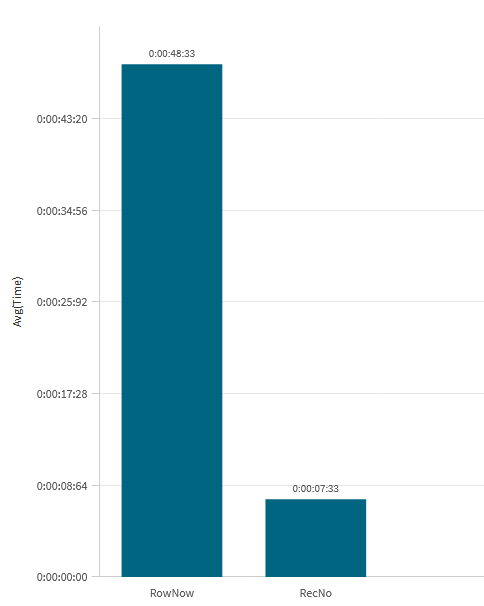

You need a sequential ID on a table. Qlik gives you two functions that look
interchangeable — RecNo() and RowNo() — and on a load with no
WHERE clause and no concatenation, they produce exactly the same numbers.
So most of us pick one out of habit and never think about it again.
That habit costs real time. On a 3 million row resident load, RowNo() took
48 seconds and RecNo() took 7 seconds — same
table, same output, ~6.6× difference.
What the two functions actually do
They sound like synonyms, but they count different things:
-
RecNo()returns the number of the current record in the source being read. It counts inputs. It restarts at 1 for every source table, and it counts rows that aWHEREclause later throws away. -
RowNo()returns the position of the current row in the resulting Qlik table. It counts outputs. Rows filtered out byWHEREget no number, so the sequence stays gapless — and if the load auto-concatenates onto an existing table, it keeps counting from the rows already there rather than starting over.
That difference matters for correctness in a handful of cases, and we'll come back to it. But first: it also turns out to matter a lot for speed.
The test
A synthetic Transactions table of 3 million rows and about 20
fields — a mix of dimensions, dates and derived measures, generated with
Autogenerate. Both tests are plain RESIDENT loads of
* plus the counter field, dropped immediately afterwards, and each wrapped in a
small sLog timing subroutine that records the start and end timestamps.
LET vTestStart = timestamp(now(),'hh:mm:ss.fff');
Tmp_Test:
LOAD
*,
RowNo() AS ID
RESIDENT Transactions;
DROP TABLE Tmp_Test;
CALL sLog('RowNo','$(vTestStart)',timestamp(now(),'hh:mm:ss.fff'));
LET vTestStart = timestamp(now(),'hh:mm:ss.fff');
Tmp_Test:
LOAD
*,
RecNo() AS ID
RESIDENT Transactions;
DROP TABLE Tmp_Test;
CALL sLog('RecNo','$(vTestStart)',timestamp(now(),'hh:mm:ss.fff'));
Two statements, one function name apart. Everything else is identical — and since there's no
WHERE clause and no concatenation, both produce the identical
1 … 3,000,000 sequence.
sLog subroutine used here, it's the same one from
the script timer post — two timestamps in, one row
of results out, so you can benchmark anything in your own script.
Results

| Function | Avg time | Notes |
|---|---|---|
| RecNo() | ~7.3 s | Counts source records |
| RowNo() | ~48.3 s | ~6.6× slower for the same output |
41 seconds of pure overhead on 3 million rows, for a field that ends up holding exactly the same values. Scale that to a 30 million row fact table and you're looking at minutes added to your reload window by a single function choice.
Why the gap is so large
The likely explanation is in the definitions. RecNo() is a property of the
input: the engine knows the position of a record in the source as it reads it, so any
chunk of the load can compute the counter without knowing anything about any other chunk.
That parallelises freely.
RowNo() is a property of the output table under construction. Row
1,500,001 can't know its number until every row before it has been placed in the result — the
counter depends on the running state of the table being built. That's an inherently
sequential dependency, and it's the kind of thing that pins an otherwise parallel load onto a
single ordered path.
When they're actually interchangeable
This is the important part, because the fast option isn't always the correct one. Swap
RowNo() for RecNo() freely when:
- There's no
WHEREclause filtering the load. - The load doesn't auto-concatenate onto an existing table.
- You're reading a single source — one QVD, one resident table, one file.
In that situation the two are identical, and there's no argument for paying 6× for the same numbers.
Where they diverge, the classic case is a filtered load:
// 3,000,000 source rows, only some of them kept
LOAD
RecNo() AS RecID, // 1, 4, 7, 12 … gaps where rows were dropped
RowNo() AS RowID // 1, 2, 3, 4 … gapless
RESIDENT Transactions
WHERE Revenue > 500000;
RecNo() is still counting the source, so the surviving rows carry the numbers
they had before the filter — the sequence has holes in it. RowNo() gives you a
clean unbroken sequence over the rows you kept. Same story with concatenation:
RowNo() continues across the whole result table while RecNo()
restarts at 1 for each source.
Getting a gapless sequence at RecNo() speed
You don't have to choose between the two properties. Push the filter into an inner load and
put RecNo() in a preceding load on top of it:
LOAD
*,
RecNo() AS RowID // gapless — counts what the inner load emitted
;
LOAD
*
RESIDENT Transactions
WHERE Revenue > 500000;
The inner load does the filtering, so by the time RecNo() runs, the discarded
rows never existed as far as it's concerned. It counts the records handed up to it — which is
exactly the gapless sequence RowNo() would have produced, at the cheaper
function's price.
AutoNumber() over the business
keys instead of counting rows.
Bottom line
RecNo()is ~6.6× faster — 7.3 s vs 48.3 s on 3 million rows.- They're identical on an unfiltered, non-concatenating load from a single source. That's most loads.
- They differ when a
WHEREclause drops rows (RecNo leaves gaps) or the load concatenates (RowNo keeps counting). - You can have both: filter in an inner load,
RecNo()in the preceding load — gapless and fast. - Neither is a stable key. For that,
AutoNumber()on the real business keys.
Of all the tuning available in a load script, this is about the cheapest win there is: search
your scripts for RowNo(), check whether the load is filtered or concatenated, and
if it isn't, change one function name.